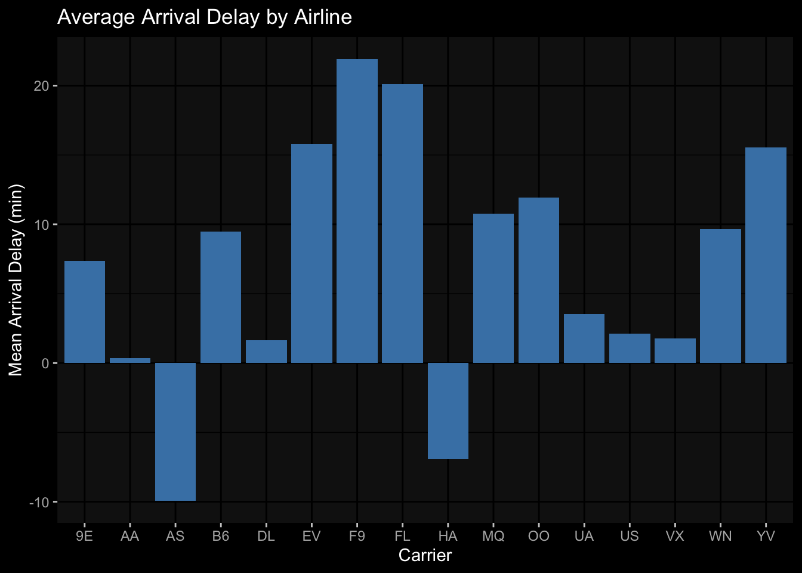
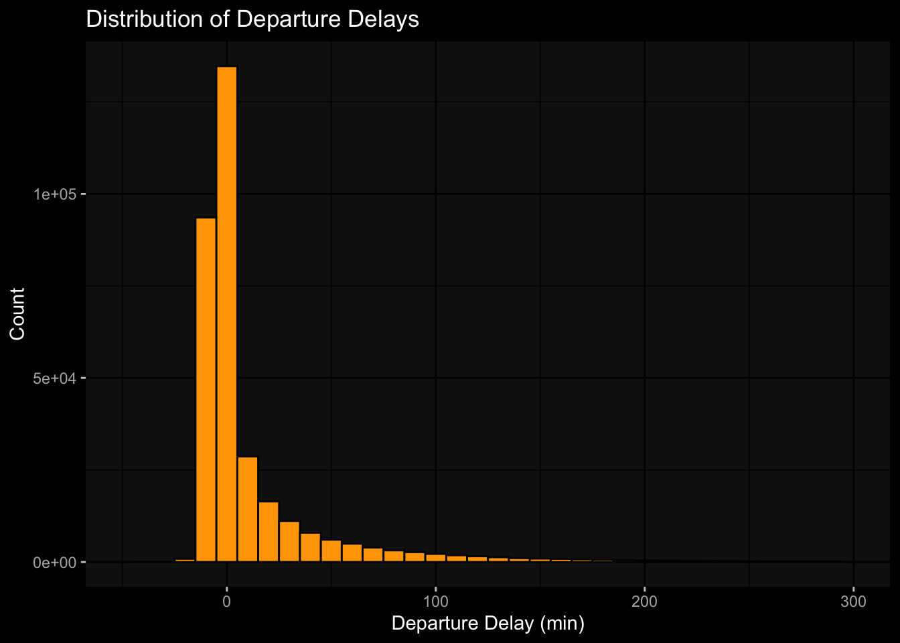
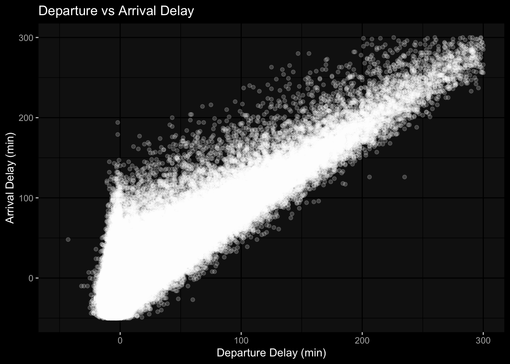

if (!requireNamespace("tidyverse", quietly = TRUE)) {
install.packages("tidyverse")
}
if (!requireNamespace("dplyr", quietly = TRUE)) {
install.packages("dplyr")
}
if (!requireNamespace("nycflights13", quietly = TRUE)) {
install.packages("nycflights13")
}
library(dplyr)
library(tidyverse)
library(nycflights13)
library(ggplot2)
library(ggdark)BDSI - Data Manipulation with dplyr and nycflights13
Overview
This document demonstrates data manipulation using dplyr and visualization with ggplot2 on the nycflights13 data set.
Install required packages
Preview the flights data
head(flights)# A tibble: 6 × 19
year month day dep_time sched_dep_time dep_delay arr_time sched_arr_time
<int> <int> <int> <int> <int> <dbl> <int> <int>
1 2013 1 1 517 515 2 830 819
2 2013 1 1 533 529 4 850 830
3 2013 1 1 542 540 2 923 850
4 2013 1 1 544 545 -1 1004 1022
5 2013 1 1 554 600 -6 812 837
6 2013 1 1 554 558 -4 740 728
# ℹ 11 more variables: arr_delay <dbl>, carrier <chr>, flight <int>,
# tailnum <chr>, origin <chr>, dest <chr>, air_time <dbl>, distance <dbl>,
# hour <dbl>, minute <dbl>, time_hour <dttm>glimpse(flights)Rows: 336,776
Columns: 19
$ year <int> 2013, 2013, 2013, 2013, 2013, 2013, 2013, 2013, 2013, 2…
$ month <int> 1, 1, 1, 1, 1, 1, 1, 1, 1, 1, 1, 1, 1, 1, 1, 1, 1, 1, 1…
$ day <int> 1, 1, 1, 1, 1, 1, 1, 1, 1, 1, 1, 1, 1, 1, 1, 1, 1, 1, 1…
$ dep_time <int> 517, 533, 542, 544, 554, 554, 555, 557, 557, 558, 558, …
$ sched_dep_time <int> 515, 529, 540, 545, 600, 558, 600, 600, 600, 600, 600, …
$ dep_delay <dbl> 2, 4, 2, -1, -6, -4, -5, -3, -3, -2, -2, -2, -2, -2, -1…
$ arr_time <int> 830, 850, 923, 1004, 812, 740, 913, 709, 838, 753, 849,…
$ sched_arr_time <int> 819, 830, 850, 1022, 837, 728, 854, 723, 846, 745, 851,…
$ arr_delay <dbl> 11, 20, 33, -18, -25, 12, 19, -14, -8, 8, -2, -3, 7, -1…
$ carrier <chr> "UA", "UA", "AA", "B6", "DL", "UA", "B6", "EV", "B6", "…
$ flight <int> 1545, 1714, 1141, 725, 461, 1696, 507, 5708, 79, 301, 4…
$ tailnum <chr> "N14228", "N24211", "N619AA", "N804JB", "N668DN", "N394…
$ origin <chr> "EWR", "LGA", "JFK", "JFK", "LGA", "EWR", "EWR", "LGA",…
$ dest <chr> "IAH", "IAH", "MIA", "BQN", "ATL", "ORD", "FLL", "IAD",…
$ air_time <dbl> 227, 227, 160, 183, 116, 150, 158, 53, 140, 138, 149, 1…
$ distance <dbl> 1400, 1416, 1089, 1576, 762, 719, 1065, 229, 944, 733, …
$ hour <dbl> 5, 5, 5, 5, 6, 5, 6, 6, 6, 6, 6, 6, 6, 6, 6, 5, 6, 6, 6…
$ minute <dbl> 15, 29, 40, 45, 0, 58, 0, 0, 0, 0, 0, 0, 0, 0, 0, 59, 0…
$ time_hour <dttm> 2013-01-01 05:00:00, 2013-01-01 05:00:00, 2013-01-01 0…Filtering rows: Flights on January 1st
jan1_flights <- flights %>% filter(month == 1, day == 1)
head(jan1_flights)# A tibble: 6 × 19
year month day dep_time sched_dep_time dep_delay arr_time sched_arr_time
<int> <int> <int> <int> <int> <dbl> <int> <int>
1 2013 1 1 517 515 2 830 819
2 2013 1 1 533 529 4 850 830
3 2013 1 1 542 540 2 923 850
4 2013 1 1 544 545 -1 1004 1022
5 2013 1 1 554 600 -6 812 837
6 2013 1 1 554 558 -4 740 728
# ℹ 11 more variables: arr_delay <dbl>, carrier <chr>, flight <int>,
# tailnum <chr>, origin <chr>, dest <chr>, air_time <dbl>, distance <dbl>,
# hour <dbl>, minute <dbl>, time_hour <dttm>Selecting columns: Only flight and delay info
delay_info <- flights %>% select(year, month, day, dep_delay, arr_delay)
head(delay_info)# A tibble: 6 × 5
year month day dep_delay arr_delay
<int> <int> <int> <dbl> <dbl>
1 2013 1 1 2 11
2 2013 1 1 4 20
3 2013 1 1 2 33
4 2013 1 1 -1 -18
5 2013 1 1 -6 -25
6 2013 1 1 -4 12Mutating columns: Calculate total delay
flights_delay <- flights %>% mutate(total_delay = dep_delay + arr_delay)
head(flights_delay)# A tibble: 6 × 20
year month day dep_time sched_dep_time dep_delay arr_time sched_arr_time
<int> <int> <int> <int> <int> <dbl> <int> <int>
1 2013 1 1 517 515 2 830 819
2 2013 1 1 533 529 4 850 830
3 2013 1 1 542 540 2 923 850
4 2013 1 1 544 545 -1 1004 1022
5 2013 1 1 554 600 -6 812 837
6 2013 1 1 554 558 -4 740 728
# ℹ 12 more variables: arr_delay <dbl>, carrier <chr>, flight <int>,
# tailnum <chr>, origin <chr>, dest <chr>, air_time <dbl>, distance <dbl>,
# hour <dbl>, minute <dbl>, time_hour <dttm>, total_delay <dbl>Summarizing: Average delay by airline
avg_delay <- flights %>% group_by(carrier) %>% summarise(mean_arr_delay = mean(arr_delay, na.rm = TRUE))
avg_delay# A tibble: 16 × 2
carrier mean_arr_delay
<chr> <dbl>
1 9E 7.38
2 AA 0.364
3 AS -9.93
4 B6 9.46
5 DL 1.64
6 EV 15.8
7 F9 21.9
8 FL 20.1
9 HA -6.92
10 MQ 10.8
11 OO 11.9
12 UA 3.56
13 US 2.13
14 VX 1.76
15 WN 9.65
16 YV 15.6 Plot: Average arrival delay by airline
ggplot2::ggplot(avg_delay, aes(x = carrier, y = mean_arr_delay)) +
geom_col(fill = "steelblue") +
labs(title = "Average Arrival Delay by Airline", x = "Carrier", y = "Mean Arrival Delay (min)") +
dark_theme_gray()Inverted geom defaults of fill and color/colour.
To change them back, use invert_geom_defaults().
Plot: Distribution of departure delays
ggplot2::ggplot(flights, aes(x = dep_delay)) +
geom_histogram(binwidth = 10, fill = "orange", color = "black") +
xlim(-50, 300) +
labs(title = "Distribution of Departure Delays", x = "Departure Delay (min)", y = "Count") +
dark_theme_gray()
Plot: Relationship between departure and arrival delay
ggplot2::ggplot(flights, aes(x = dep_delay, y = arr_delay)) +
geom_point(alpha = 0.2) +
xlim(-50, 300) + ylim(-50, 300) +
labs(title = "Departure vs Arrival Delay", x = "Departure Delay (min)", y = "Arrival Delay (min)") +
dark_theme_gray()